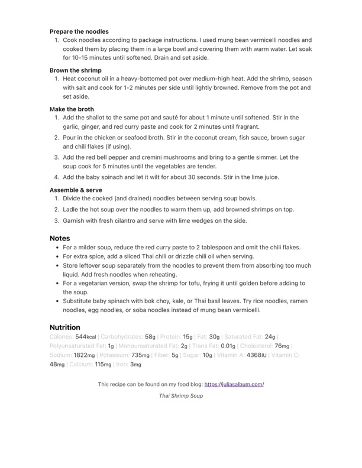

Prepare the noodles

Original cookbook page 796
Ingredients
- 1 pound rice noodles
- 2 tablespoons oil
- 3 cloves garlic, minced
- 1 tablespoon soy sauce
- 1 teaspoon sesame oil
- 2 green onions, chopped
- 1/4 cup cilantro
- Salt and pepper to taste
Instructions
- Prepare the noodles Brown the shrimp Heat coconut oil in a heavy-bottomed pot over medium-high heat. Add tt Add the shallot to the same pot and sauté for about 1 minute until soften Pour in the chicken or seafood broth. Stir in the coconut cream, fish sauc Add the red bell pepper and cremini mushrooms and bring to a gentle sin Add the baby spinach and let it wilt for about 30 seconds. Stir in the lime Ladle the hot soup over the noodles to warm them up, add browned shrir Garnish with fresh cilantro and serve with lime wedges on the side.
Recipe #796 from collection